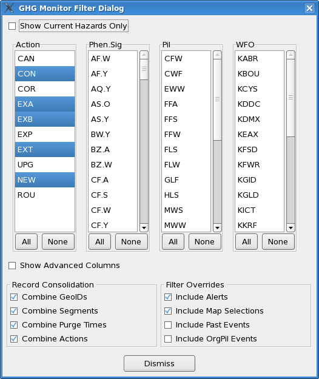

| Command Line Option | Optional? | Meaning |
| -h hostname | YES | Identifies the hostname upon which EDEX is running. During installation, this value is automatically set, but may be overridden. |
| -p portNumber | YES | Identifies the RPC port number upon which EDEX is running. During installation, this value is automatically set, but may be overridden. |
| -u username | YES | Specifies the user id to be used for the GFE session.
This affects
the availability of GHG monitor configuration data. See the base,
site, and user configuration guide for details. The
default, if not specified, is the Linux login account name. |
| -t activeTableName |
YES |
Identifies the name of the
active table to monitor. "" or "active" refers to the normal
active table. "PRACTICE" refers to the practice active table,
which is used while in GFE PRACTICE mode. |
| Tab |
Meaning |
| Text |
The Text tab selects the Text
Display. The Text Display shows the captured text for the
selections made on the Map or Spreadsheet. |
| Map |
The Map tab selects the Map
Display. The Map Display shows the geographical layout for the
hazard. Selections may also be made on the Map Display. |
| Save Configuration |
The current configuration is
saved to EDEX. See the configuration
section for details on what is saved. |
| Load Configuration |
The saved configuration is read
from EDEX. The changes are made immediately to the GHG
Monitor. See the configuration
section for details on what is retrieved. |
| Default Configuration |
The default configuration provided by Raytheon is loaded. The changes are made immediately to the GHG Monitor. See the configuration section for details on what is restored. |
| Exit GHG Monitor |
Exits the GHG Monitor. |
| Menu Item |
Description |
Default
Displayed? |
| Action |
Action code for the event, such
as "CON" for Continued. |
YES |
| VTEC String |
Displays the VTEC Strings(s)
from the product, such as
"/T.NEW.KBOU.BZ.W.0001.050107T0500Z-050107T2000Z/" |
NO |
| ETN |
Event Tracking Number, such as
"0001". |
YES |
| Phen.Sig |
Hazard, in the form of Phen.Sig,
such as WS.W for a Winter Storm Warning |
YES |
| Hazard |
Descriptive words for the
hazard, such as "Winter Storm Warning" |
NO |
| Phen |
VTEC Phenonema Code, such WS for
Winter Storm |
NO |
| Sig |
VTEC Significance Code, such a W
for Warning. |
NO |
| Start |
Event starting time. |
YES |
| End |
Event ending time. |
YES |
| Purge |
Product Segment Purge Time. |
YES |
| Issue Time |
Product Issuance Time |
YES |
| Pil |
Product category, a.k.a. pil,
such as WSW for Winter Weather Watches/Warnings |
YES |
| Seg |
Product Segment Number.
Segments are sequentially number from 1 in the product. |
NO |
| WFO |
Originating WFO Identifier. |
YES |
| GeoID |
List of zones that are affected
by this hazard. |
NO |
| Default |
Restores the Default set of
displayed columns. |
n/a |
| Define Filter... |
Brings up the GHG Display Filter
Dialog. This dialog provides options for consolidating records,
and filtering out certain records based on criteria. |
| Default Filter |
Resets the GHG Display Filter to
the default filter. |
| <Named Filters> |
Sets the display filter to one
of the named filters. |
| Save Current Filter... |
Brings up the GHG Save Display
Filter dialog, allowing the user to specify a name for the current
filter. The filter will then be displayed in the list of
<Named Filters>. |
| Delete Named Filter... |
Brings up the GHG Delete Display
Filter dialog, allowing the user to delete a previously named filter. |
| Define Alerts... |
Brings up the GHG Monitor Alert
Dialog, allowing the user to specify the characteristic for the three
alert types. |
| Default Filter |
Resets the alert characteristics
to the default filter. |
| Show FIPS |
Changes the map background to
the FIPS. The FIPS contains counties over land and marine zones
over water. |
| Show Public |
Changes the map background to
the Public map, consisting of public forecast zones. |
| Show FireWx |
Changes the map background to
the Fire Weather map, consisting only of fire weather zones. |
| Show Marine |
Changes the map background to
the Marine map, consisting of the coastal marine zones and offshore
marine zones. |
| No Zoom |
Unzooms the map to show the
entire domain. |
| x2 |
Zooms the map in to a factor of
2. The center of the map remains the center of the map if
possible. |
| x4 |
Zooms the map in to a factor of 4. The center of the map remains the center of the map if possible. |
| x6 |
Zooms the map in to a factor of 6. The center of the map remains the center of the map if possible. |
| x8 |
Zooms the map in to a factor of 8. The center of the map remains the center of the map if possible. |
| x12 |
Zooms the map in to a factor of 12. The center of the map remains the center of the map if possible. |
| x16 |
Zooms the map in to a factor of 16. The center of the map remains the center of the map if possible. |
| Show Labels |
Toggles on/off the map
background labels. The labels reflect the zone code. |
| Font... |
Brings up the GHG Monitor Font
Choice Dialog, allowing the user to choose a font size in the
spreadsheet and text display from one of five options. |
| Colors... |
Brings up the GHG Monitor Color
Choice Dialog, allowing the user to set the foreground/background color
in the spreadsheet for seven different aspects of the display. |
| Identify TEST Events |
Toggles on/off the TEST product
behavior. If toggled on, then the color of TEST products
will appear differently than regular products. |
| MB1 click on a column header |
Sorts the data in the
spreadsheet by the data in that column. Alternating clicks will
sort in ascending order, then decending order. The column header will
highlight to indicate that the spreadsheet is sorted by that
column. There is no indicator, other than inspecting the data
itself, to indicate whether the spreadsheet is sorted in ascending or
decending order. |
| MB1 click on a cell in the
spreadsheet |
Highlights the row with the
"Monitor Selection" color, and then indicates on the map the
geographical location of the hazard, and on the text display the
captured text of the issued product. Not all hazards have
associated captured text. |
| MB1 click on a zone on the map. |
Highlights all rows in the
spreadsheet that contain a hazard affecting the clicked-upon zone. The
Map display in turn will show all of the zones in common for those
selected rows in the spreadsheet using the "cyan" default color.
The Text display will show the captured text from all of the products
identified by the selected rows in the spreadsheet. |
| This is the GHG Monitor Filter
Dialog. The upper section consists of the listbox
options. Selecting items from the listbox will change the
filtering. If a particular column/listbox contains no
highlighted sections, it is intrepreted as if all of the sections were
highlighted. In the example, only the CON, EXA, EXB, EXT, and NEW
actions will be shown in the spreadsheet; all other records will be
filtered out. All Phen/Sig and Pils will be shown since no
entries are highlighted in those two listboxes. Buttons at
the bottom of each listbox allow quick selection and deselection of all
entries. The "Show Current Hazards Only" button will filter the displayed set of entries in the listbox based on those records actually found and is a quick way to get an overview summary of all hazards. "Current Hazards" are considered those hazards found in the VTEC active table AND those hazards whose ending time or purge time has not yet passed. The "Show Advanced Columns" is intended for advanced users to examine other hazard aspects, such as filtering by geographical id (e.g., zone), segment number, and ETN number. The regular user will not need this capability, but it is useful for diagnostics. The Record Consolidation section and the Filter Override section provides additional control on what records will appear in the Spreadsheet. |
 |
| Option |
Description |
Default |
| Combine GeoIDs |
This option attempts to combine
all records with the same hazard that differ only by their location
(e.g., zone). |
YES |
| Combine Segments |
This option attempts to combine
all records with the same hazard that appear in different product
segments. |
YES |
| Combine Purge Times |
This option attempts to combine
all records with the same hazard that have different purge times (due
to different segments). The purge time reflected in the
spreadsheet will be the "soonest" or "earliest" of the different purge
times. |
YES |
| Combine Actions |
This option attempts to combin
all records with the same hazard that may have different action
codes. When combining action codes, only codes within the same
group will be combined. For example, CON, EXA, EXB, EXT, NEW all
reflect active hazards and those action codes may be combined.
records with CAN, UPG, EXP reflect hazards no longer present and those
action codes may be combined. You cannot combine records with a
CON and CAN since they belong in two different action groups. |
YES |
| Option |
Description |
Default |
| Include Alerts |
With this option turned off,
alerts that have been filtered out will not be shown in the
spreadsheet, although alerts will still occur. With this option
turned on, alert records that are filtered out will be automatically
added to the spreadsheet and highlighted. For example, if
this option is on and the display filter has WS.W (Winter Storm
Warning) turned off, and a WSW product is about to expire, then a WS.W
record will appear in the spreadsheet anyway. |
YES |
| Include Map Selections |
With this option turned off,
selections made on the map background will only highlight those records
already displayed in the spreadsheet that match the
geography. With the option turned off, the display filter
is bypassed when a selection is made on the map background and
additional records that reflect hazards in that zone will be added to
the spreadsheet listing. For example, if this option is on
and the display filter has WS.W turned off, there will be no hazard
records shown in the spreadsheet containing WS.W. If the user
clicks on a zone that has a WS.W, then the WS.W hazard record for that
zone will be automatically added to the spreadsheet. Note that
"Include Past Events" affects the records in the spreadsheet for the
"map selections". If set, then any records with the zone selected
will be added to the spreadsheet. If not set, then only records
that are currently in effect (i.e., ending time of the hazard has not
passed) that contain ongoing actions (NEW, CON, EXA, EXB, EXT) will be
shown. |
YES |
| Include Past Events |
With this option turned off,
hazard entries in the spreadsheet will not contain any hazard records
that are in the "past". "Past" is defined as records that have an
event ending time earlier than the present time. |
NO |
| Include OrgPil Events |
With this option turned off,
hazard entries in the spreadsheet will not contain any OrgPil hazard records. |
NO |
| The "Show Advanced Columns"
option on the Filter Dialog will add the GeoID, ETN, and Seg
columns. Normally a user does not filter on these columns, but it
is useful for diagnostic purposes. The ETN, and Seg columns always show the list of ETN and segments that are contained within the VTEC active table and are updated as new records arrive. |
|
| If the "Show Current Hazards
Only" option is enabled, then the listboxes will change to show just
those entries that have been found in the VTEC active table. In
this case, only the CON and NEW actions were found. The GeoID
column shows just those zones containing current hazards. Remember that filters are set when you turn on "Show Current Hazards Only" and future events may be filtered out. |
The Alert Dialog is accessed from the Alert menu. Through the "Enable Alert1", "Enable Alert2", and "Enabled Expired" checkbuttons, the user can turn on or off the alerts. Each of these alert types also has a "Show Banner" checkbutton. If enabled, then a banner alert will be displayed when the alert is fired. If disabled, then only the spreadsheet will be highlighted. The Display Filter "Include Alerts" checkbutton needs to be enabled in order to see all alerts. Without that checkbutton enabled, it is possible that the forecaster may have filtered out the hazards causing the alerts. The scales are used to define the number of minutes prior to the product purge time (expire time) that the alert will trigger. The "Expired" alert type does not permit adjustment of the scale and is always fixed at 0 minutes. |
|
| Selecting Appearance -> Font... will bring up the GHG Monitor Font Choice Dialog. Five choices of font sizes, with the current font size are shown. The user selects the new font, and selects Apply Font. |
| Example of the Spreadsheet using
the smallest available font: |
|
| Example of the Spreadsheet using
the largest available font: |
| Alert Level 1 |
This color is used in the
Spreadsheet and the Alert banner messages for the 1st level of alerts
when a product is about to expire. |
| Alert Level 2 |
This color is used in the
Spreadsheet and the Alert banner messages for the 2nd level of alerts
when a product is about to expire. |
| Expired Alert |
This color is used in the
Spreadsheet and the Alert banner messages when the product has expired. |
| Map Selections |
The Map Selection color is shown
in the Spreadsheet and on selected zones in the Map Display. A
Map Selection is made when the user has clicked upon a zone in the map
background. |
| Regular Entries |
Regular Entries are those
entries in the Spreadsheet that aren't highlighted by map clicks,
spreadsheet clicks, aren't TEST products, and aren't alerted entries. |
| Monitor Selections |
Monitor Selection color is shown
in the Spreadhseet and on releated zones in the Map Display. A
Monitor Selection is made when the user has clicked upon a spreadsheet
cell/row. |
| Test Product |
Test product are displayed in a
different color in the Spreadsheet to indicate to the user that this is
a TEST product and not an operational product. The special
appearance of the test products may be disabled using the "Identify
Test Products" option. |